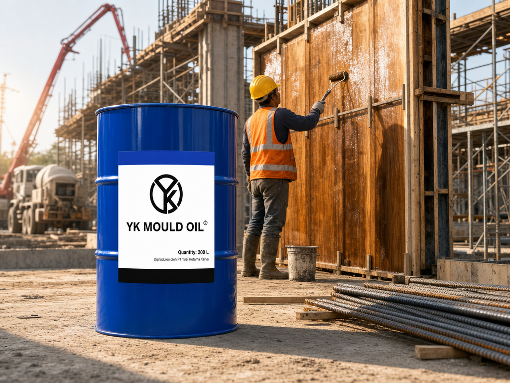
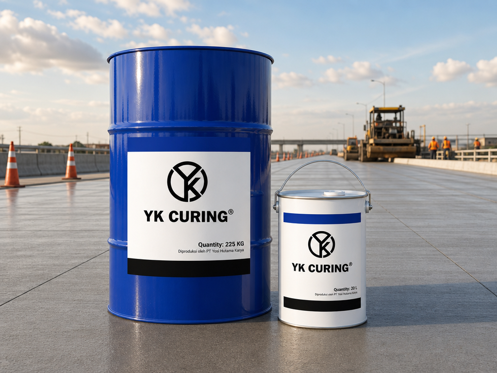
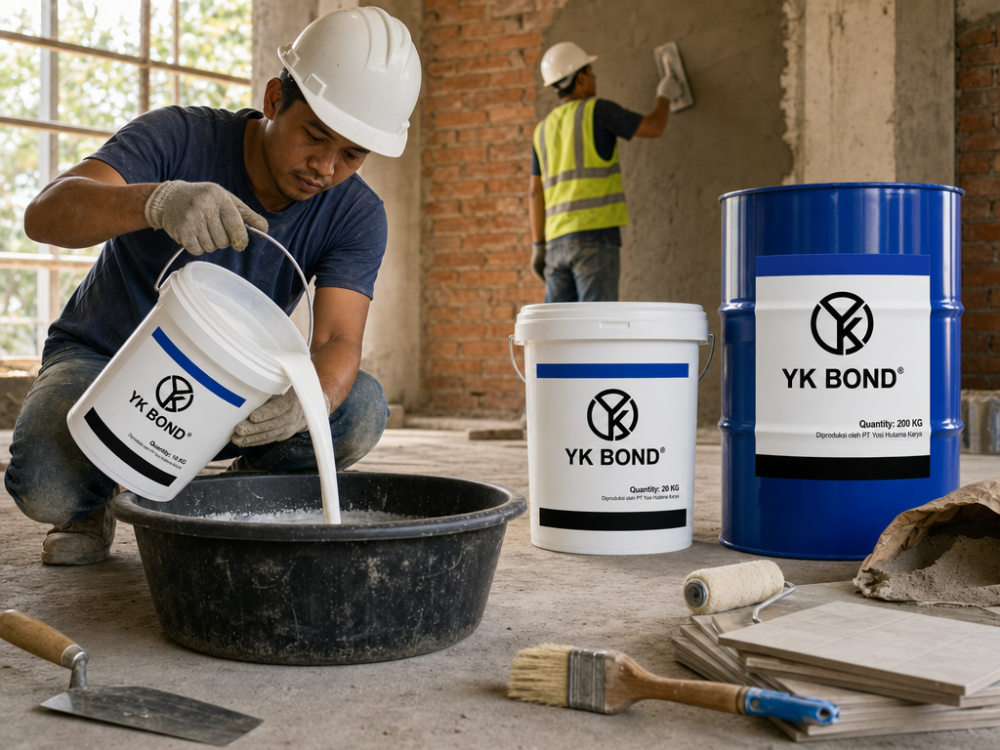
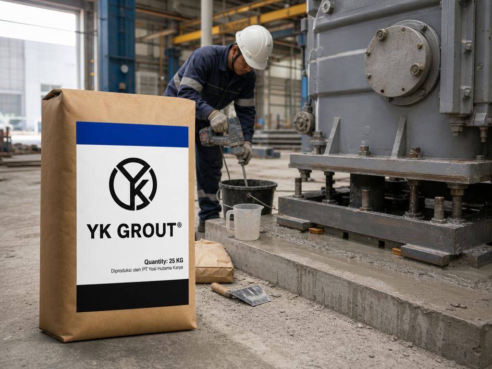
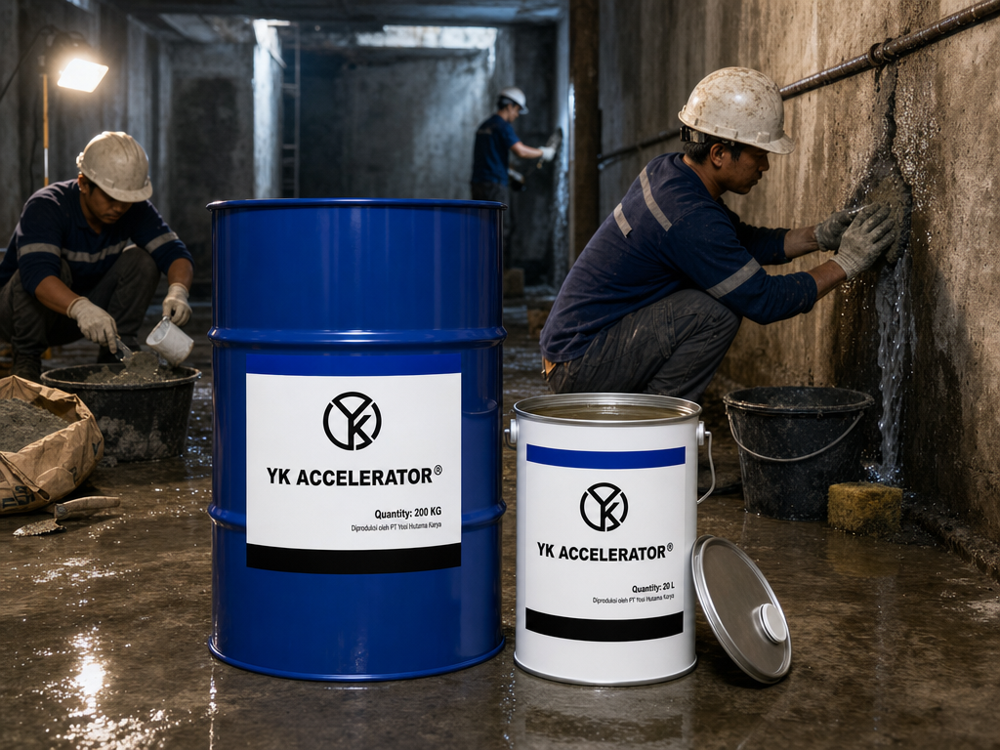
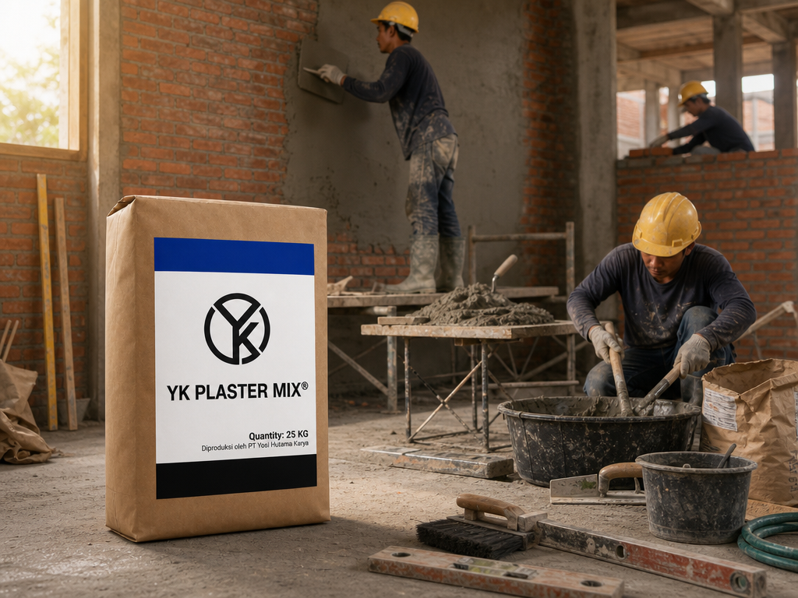
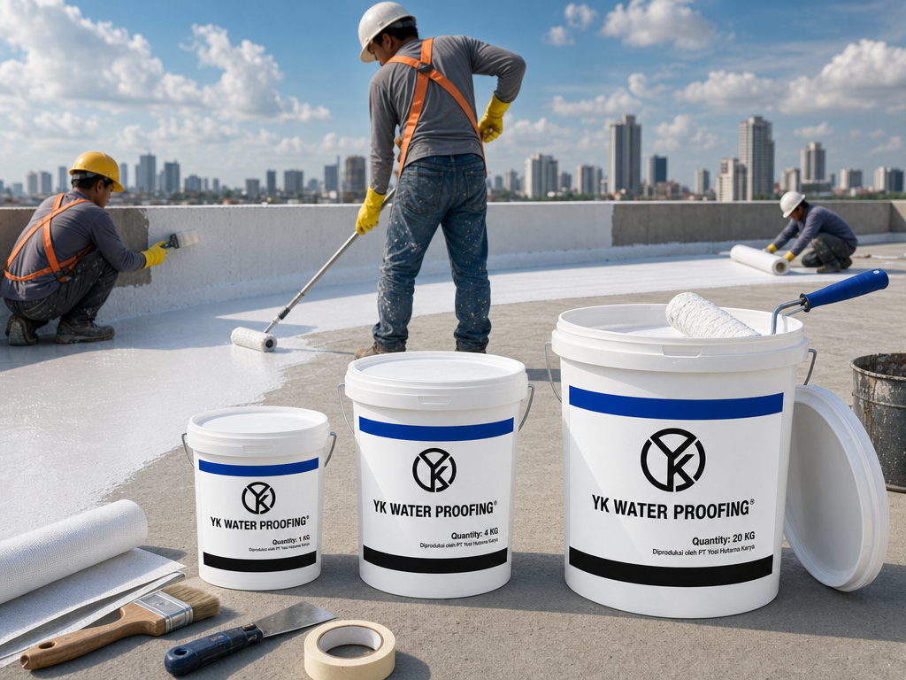
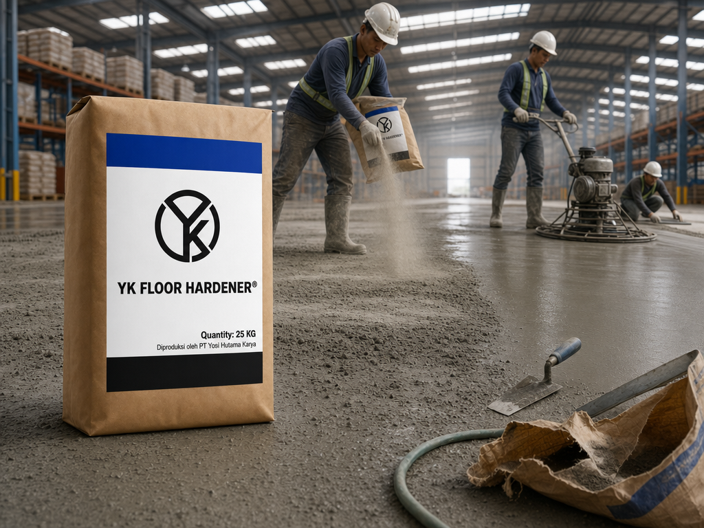
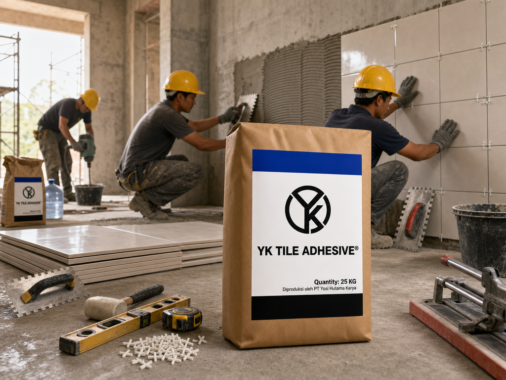
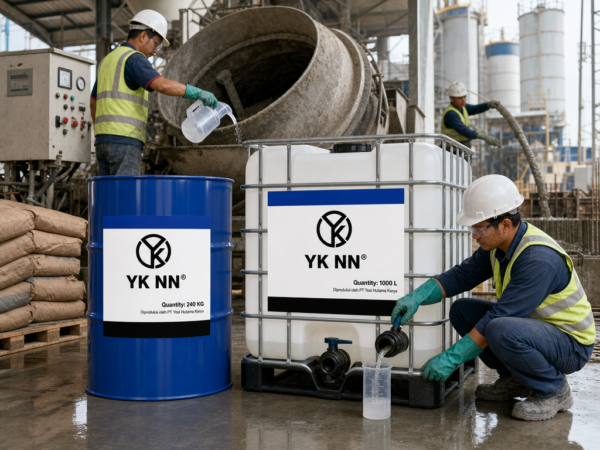

Dari concrete admixture untuk pengecoran struktur sampai bonding agent untuk renovasi, semua dengan kualitas yang konsisten.
Mempermudah lepas cetakan dan jaga kelembaban beton baru agar tidak retak.
Lihat Detail Lengkap (Problem & Solusi) →
Minyak bekisting siap pakai untuk lepas cetakan kayu/logam/plastik.

Curing compound untuk jalan raya, landasan, apron, dermaga, & roof deck.
PVA emulsion bonding agent multi-fungsi, 5 aplikasi dalam 1 produk: beton lama-baru, primer plester, plester kasar, acian halus, perekat keramik.
Lihat Detail Lengkap (Problem & Solusi) →
Bahan perekat berbasis Polyvinyl Acetate Emulsion. Kompatibel semua tipe semen.
Material isi celah dengan presisi tinggi, tidak menyusut, kekuatan awal cepat, tahan getaran & kimia.
Lihat Detail Lengkap (Problem & Solusi) →
Grouting siap pakai untuk angkur, pondasi mesin, dudukan bearing pad, perbaikan struktur kelautan.
Aditif mortar untuk tambal bocor seketika, daya rekat tinggi, dan mortar bebas retak.
Lihat Detail Lengkap (Problem & Solusi) →
Aditif penyumbat bocor seketika: basement, watertank, retakan tekanan tinggi.
Mortar siap pakai untuk plesteran dinding & pemasangan batu bata, mutu konsisten tiap batch, hemat waktu kerja di lapangan.
Lihat Detail Lengkap (Problem & Solusi) → Panduan Anti Retak →
Mortar siap pakai untuk plesteran dinding & pemasangan batu bata.
Lapisan kedap air tahan UV, lentur, dan menutup pori beton, solusi anti bocor jangka panjang.
Lihat Detail Lengkap (Problem & Solusi) →
Lapisan kedap air emulsi akrilik untuk atap beton, sambungan tembok-atap, dinding parapet.
Lantai beton tahan abrasi, anti debu, & tahan oli, sekali pasang awet bertahun-tahun, dengan 6 pilihan warna untuk zonasi area kerja.
Lihat Detail Lengkap (Problem & Solusi) → Panduan Harga per m² →
Bubuk pengeras lantai beton untuk gudang, pelabuhan, jalur kendaraan, parkir, bengkel.
Perekat siap pakai dengan daya rekat tinggi, setting cepat, dan bisa on-tile (langsung di atas keramik lama).
Lihat Detail Lengkap (Problem & Solusi) → Panduan On-Tile →
Untuk merekatkan keramik, marmer, & granit pada permukaan lantai & dinding. Bisa on-tile.
Bahan tambah beton untuk kuat tekan tinggi, setting cepat, dan durability maksimal, siap pakai untuk pelat, pondasi, kolom, jembatan, dan precast.
Lihat Detail Lengkap (Problem & Solusi) →
Pengurang air & percepatan setting beton.
Tim aplikator senior siap site visit gratis ke lokasi proyek Bapak/Ibu.
Hubungi Sales